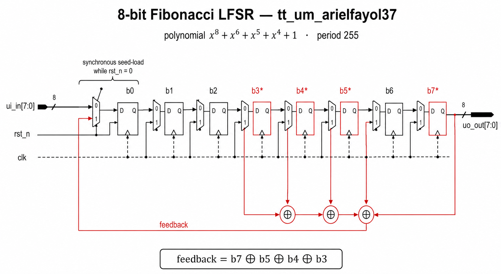
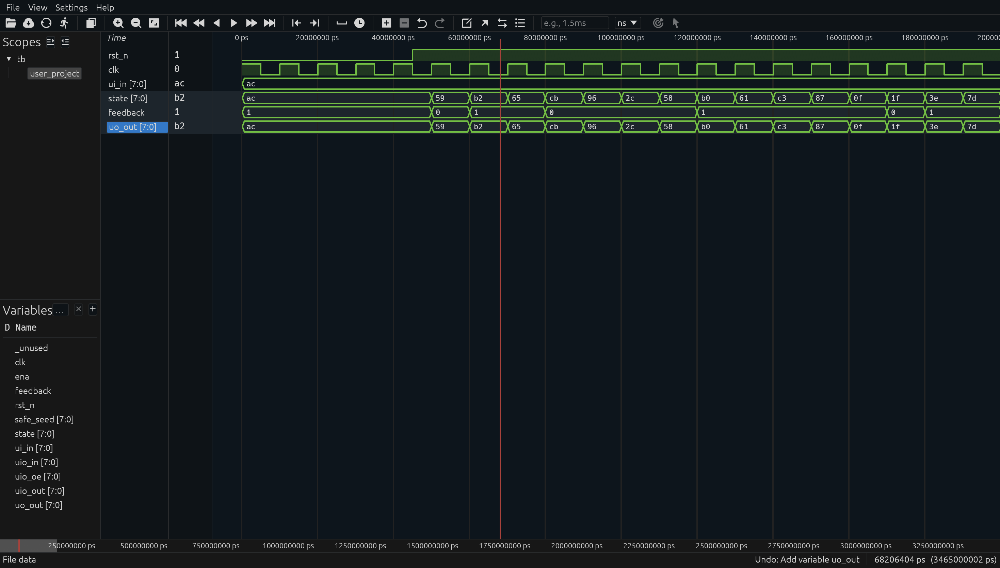
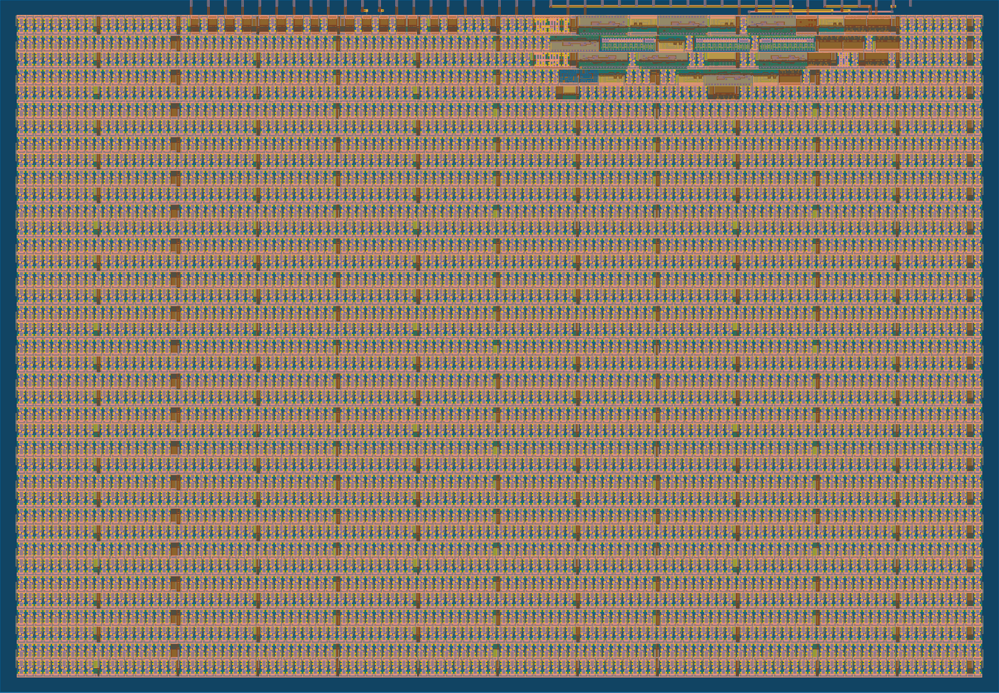

8-bit LFSR Pseudo-Random Generator
Tiny Tapeout · sky130 · 50 MHz
Fayol Ateufack
Digital Design — Final Project — May 13, 2026
Hi, I'm Fayol. For my final project I designed an 8-bit linear-feedback shift register and pushed it through the entire Tiny Tapeout flow — Verilog, simulation, synthesis, place-and-route — all the way to a GDSII layout that could go to a fab. I'll show you the design, the verification, and the chip layout in about five minutes.
What is Tiny Tapeout?
Educational program — get your digital design actually fabricated for ~$50
Many small student designs share one die in the SkyWater 130 nm process
Each project gets a 1 × 1 tile ≈ 167 µm × 108 µm
Open-source EDA flow: Verilog → Yosys → LibreLane → GDSII
Standard pinout: 8 inputs, 8 outputs, 8 bidirectionals, plus clk, rst_n, ena
Quick context. Tiny Tapeout pools many small student designs onto a single chip and ships them to SkyWater for manufacturing. You design in Verilog, an open-source toolchain turns it into a physical layout, the consortium takes care of fabrication. Each student gets a fixed-size tile and a fixed pinout — eight inputs, eight outputs, eight bidirectionals, plus clock and reset.
The design
An 8-bit Fibonacci LFSR , characteristic polynomial:
x⁸ + x⁶ + x⁵ + x⁴ + 1
Period 255 — every non-zero 8-bit state appears exactly once before repeating
Seed loaded from ui_in[7:0] while reset is held low
Current state on uo_out[7:0] — drives 8 LEDs
Total core: 8 flip-flops + 1 XOR + a handful of muxes
The design itself is an 8-bit Fibonacci LFSR. The polynomial — x to the 8 plus x to the 6 plus x to the 5 plus x to the 4 plus 1 — is a primitive polynomial of degree 8, which is the magic property that gives us a maximal-length sequence: every non-zero 8-bit value appears exactly once before the sequence repeats. Period of 255. You feed in a seed on the input pins while reset is held, then release reset and the chip emits that 255-cycle sequence on its output pins. The whole thing is eight flops, one XOR, and a few muxes.
Why LFSRs matter
One XOR gate, big real-world impact:
BIST — pseudo-random patterns drive a CPU during manufacturing testCRC generators — Ethernet, USB, PCIe, SATA, hard drivesScramblers — 10 GbE, SATA, PCIe whiten data so the receiver can recover the clockSpread-spectrum codes — GPS Gold codes are XORs of two LFSRsCheap noise sources — NES sound chip, retro audio
Why should anyone care? LFSRs aren't a toy — they're in real chips you use every day. Every Ethernet frame on your laptop runs through a CRC-32 LFSR. PCIe and SATA scramble their data with LFSRs so the receiver can recover the clock from the data signal. GPS receivers use two intertwined LFSRs to encode each satellite's signal. Inside CPUs, BIST circuits drive pseudo-random LFSR patterns into the logic during manufacturing test. Anywhere a chip needs cheap pseudo-randomness without a real RNG, an LFSR is doing the work.
Architecture

Eight flops · four taps (b3, b4, b5, b7) · XOR feeds back into b0
Here's the architecture. Eight D-flip-flops chained left-to-right. On every clock edge, each flop takes the value of its left neighbor, so the whole register shifts one bit per cycle. The bit that gets shifted in at b0 is the XOR of four "tap" positions — bits 3, 4, 5, and 7 — and those tap positions are dictated by the polynomial. There's also a synchronous-load path: while reset is low, every flop takes its value from the corresponding bit of the input pins, which is how the seed gets loaded.
The Verilog (the entire core)
reg [7:0] state;
wire [7:0] safe_seed = (ui_in == 8'h00) ? 8'h01 : ui_in;
wire feedback = state[7] ^ state[5] ^ state[4] ^ state[3];
always @(posedge clk) begin
if (!rst_n) state <= safe_seed;
else state <= {state[6:0], feedback};
end
Synchronous reset — maps cleanly to sky130 D-flop + 2:1 mux cells
This is the entire core of the design — five lines of Verilog. The state register is one 8-bit flop. The safe_seed wire substitutes 0x01 if the user feeds in an all-zero seed — because the all-zero state is a fixed point of the XOR feedback, once you reach zero you stay at zero. The feedback wire is the single XOR gate, four inputs. And the always block says: on every rising clock edge, if reset is low, load the seed; otherwise shift left and append the feedback bit. One subtle point: I use synchronous reset rather than async, because sky130 standard-cell flops can't async-load an arbitrary value — only constants. Synchronous reset becomes a 2-to-1 mux on the D input of each flop, which maps cleanly.
Pin assignments
Pin Direction Role
ui_in[7:0]input 8-bit seed (sampled while rst_n = 0) uo_out[7:0]output Current LFSR state — drives 8 LEDs clkinput 50 MHz nominal rst_ninput Active-low; loads seed while asserted enainput Always 1 when chip is selected uio[7:0]— Unused
Tiny Tapeout has a fixed pinout, so my job was to assign meaning to each pin. The eight inputs are the seed bus. The eight outputs are the current LFSR state — wire them to LEDs and you literally see the pseudo-random pattern. Standard clock and active-low reset. The eight bidirectional pins I left unused — they're driven low and configured as inputs.
Verification — three cocotb tests
Sequence match — clock 255 cycles from seed 0xAC; assert hardware state == Python reference at every cycle; verify all 255 states are unique and we return to the seed.Zero-seed lockup avoidance — feed seed 0x00; verify substitution to 0x01 kicks in; verify state never reaches 0.Seed independence — verify three different seeds produce three different output streams.
✓ TESTS=3 PASS=3 FAIL=0
Three cocotb tests, all passing on every CI run. The strongest one runs the LFSR for one full period — 255 clock cycles — and at every single cycle it asserts that the hardware output matches a Python reference model. If a single tap were wrong, or if I'd shifted in the wrong direction, this test would fail by cycle 1. The second test verifies the zero-seed safety guard. The third checks that different seeds produce different output streams, as a sanity check.
Simulation waveform

state: ac → 59 → b2 → 65 → cb → 96 → 2c → 58 → b0 → c1 → c3 → b7 → 8f → 1f → 3e → 7d → …
Here's the waveform from the test, viewed in Surfer. Watch the state row — once reset goes high, you can see it cycle through ac, 59, b2, 65, cb, and so on. Looks random, but it's completely deterministic. Same seed, same sequence, every time. Quick sanity check: the seed is 0xac, which in binary is 1010 1100. Tap bits at positions 7, 5, 4, 3 are 1, 1, 0, 1. XOR them: 1 xor 1 is 0, xor 0 is 0, xor 1 is 1. So the feedback bit is 1. Shift left and append: 0101 1001 — that's 0x59. Matches.
From RTL to silicon

Yosys synthesis → floorplan → placement → CTS → routing → DRC / LVS / STA → GDSII
And here's the final layout — the actual mask data that would go to the foundry. The dense cluster at the top right is my LFSR logic — eight flops, the XOR, the seed-load muxes. The vast field below is filler and decoupling cells the flow inserts automatically. They contribute no logic; they're there because the manufacturing process needs minimum-density rules satisfied across the whole tile, otherwise the chemical-mechanical polish step would dish out empty regions. The flow that gets you here: Yosys does synthesis, turning Verilog into a netlist of standard cells. LibreLane handles floorplanning, placement, clock-tree synthesis, routing, design-rule and timing checks, and finally GDSII export. The whole pipeline runs in GitHub Actions in about three minutes.
What I learned
Async vs sync reset matters at synthesis time. sky130 flops can't async-reset to a non-constant value — my first GDS run produced 8 unmapped instances until I switched to synchronous reset.Cocotb 2.0 sampling is subtle for sequential logic. Reads after RisingEdge can return pre-edge values; sampling on FallingEdge guarantees the non-blocking assignments have settled.Pseudo-random ≠ random. A 255-cycle deterministic sequence has good statistical properties but zero entropy — fine for BIST and scramblers, never for crypto.Real logic is tiny; tiles fill with mandatory filler. ~50 µm² of "real" gates, but the visible tile is ~18 000 µm² — the rest is filler and decap.
A few things I learned the hard way. First — async reset to a non-constant value, like the seed I was loading on negedge of reset, doesn't map to any sky130 standard-cell flop. Yosys reported eight unmapped instances on my very first GDS run. Switching to synchronous reset fixed it immediately. Second — cocotb 2.0 returns from RisingEdge at the active edge, before non-blocking assignments have propagated. So I read the pre-edge value and one of my tests failed. Sampling on FallingEdge gives the simulator time to settle. And third — even though my logic is fifty square micrometers, the chip tile is much larger because the manufacturing flow inserts filler cells to satisfy density rules.
Thank you
Repo github.com/arielfayol37/ece430-tt-lfsr8
Datasheet arielfayol37.github.io/ece430-tt-lfsr8
Questions?
Thanks for listening. The full project — Verilog, tests, datasheet, layout files, and a written walkthrough — is on GitHub. Happy to take questions.